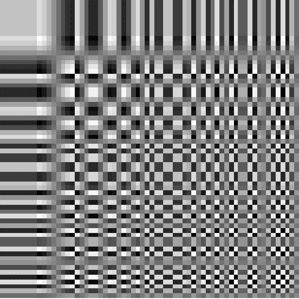
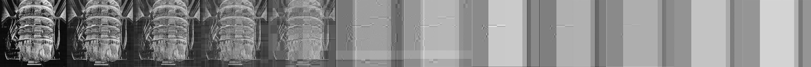

Digital Image - jpeg
Due to the high data volume of digital images, digital files are often compressed due to issues of transmission speed and cost. The compression methods
for images are typically categorized into two types: lossless and lossy. In lossless compression, as the name suggests, the original information is not lost.
Conversely, in lossy compression, data is sacrificed. Therefore, lossy compression is primarily used for images, music, and videos, where some loss of data
is acceptable. Believe it or not, our eyes and ears are quite forgiving, and we often don't notice missing details. One of the most notable formats for lossy
compression is JPEG (Joint Photographic Experts Group). JPEG was invented in 1986 and has become a widely adopted standard algorithm for digital
image compression and encoding. It allows for the storage of high-quality images in relatively small file sizes.
The JPEG compression process involves
several key techniques, including color transformation, sampling, quantization, discrete cosine transform (DCT), and Huffman encoding. In the DCT step,
the program divides the JPEG image into numerous 8x8 matrices (as shown in Figure 1) and transforms each image into the frequency domain. This DCT
transformation is used to compress and represent the image data. JPEG format is highly efficient for handling photographs and graphic images, making it
particularly useful for sharing and storing images on the web. Therefore, JPEG is a widely used format because it supports existing systems and is highly
compatible.
디지털 이미지의 높은 용량은 전송의 속도와 저장의 비용때문에 디지털파일은 특정한 포맷을 갖거나, 특정한 방식을 이용해 압축되어진다. 이미지를 압축하는 방식은 loseless방식과 lossy방식으로 나누어진다 , 믿거나 말거나, 우리의 눈과 귀는 꽤 형편없어서 보통 여기저기서 누락된 부분을 알아차리지 못하기 때문에 lossy 압축은 우리에게 그다지 중요하지 않은 정보를 제거하며 작동하는 방식이다. 이 압축방식은 효율적이기에 주로 쓰인다.
디지털화, 특히 이미지 처리 기술에서 사용되는 압축 기술은 이미지 데이터를 효율적으로 저장하거나 전송하는 방법을 의미한다. 그렇기에 이러한 전략은 이미지 데이터의 관리와 전달에 중요한 역할을 하며, 주로 데이터의 중복을 제거하거나 불필요한 정보를 줄여서 데이터의 크기를 최소화하는 과정을 포함한다. 예를들어 lossy 압축의 대표적인 JPEG포맷은 여러 압축 과정을 거치는데, 이 과정에서 DCT 테이블(Figure1)을 활용한다. 그래서 이미지를 확대했을때 일정한 패턴들로 이루어져진것을 볼수 있다. 압축기술은 포맷마다 각기 다른 방식을 취하지만, 일반적으로 압축과정을 갖으며 포맷화된다.

(Figure 1)
- Image Process

- Soruce code